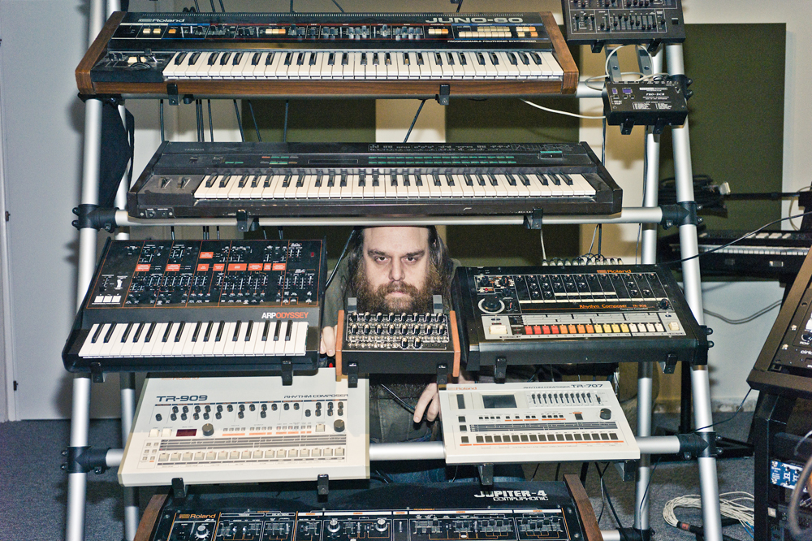

Back
Cusack
Producer / DJ
Cyprus
Tony Kattashis bought his first set of turntables in the mid 90's, while living in London. Greatly affected by the UK underground and the sounds of Detroit and Chicago, he moved back to Cyprus a decade later with several thousand vinlys, a few drum machines and some old synths. He has since secretly mastered his dance-floor sensibility both in the studio and behind the turntables, gaining reputation as one of the island's finest DJ’s.

photo: pan